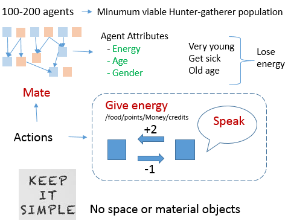
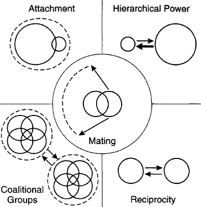

Artificial Intelligence, in particular Deep Learning, has achieved great progress recently, such as image recognition and generation, robotics, super-human performance in games as Chess, Go, Dota, and many others. On the other side, many researchers (eg. Y. Bengio , Gary Marcus, Lake et al ) argue that current techniques are insufficient to reach human-level intelligence.
Considering this, here we launch a initiative and propose a roadmap for implementing social abilities on AI.
We implement a population (> 100) of agents on a environment (see below) that rewards the development of social abilities; you may think of it as an simplified society.In humans, language is part of a larger system for acquiring, representing and communicating about objects and situations in the physical and social world, and future machine language models should emulate such a system. [1]Start with a basic language containing interrogatives, conditionals, imperatives, causality, actors, imaginary sequences of events. Then add sucessively abstract concepts such as social and moral theories. [1 , 2 ].
Interactive training: users evaluate if the action is correct in a scenario and suggest better options . Use 'surgery' (transfer weights from a old to a new neural network) to avoid retraining when updating the architecture.
Self-play with reinforcement learning for comprehensive/automatic exploration of new social scenarios (Alphazero, Negotiation)
And also... implementing abilities/concepts directly when alternatives are not efficient:
This raises the question of how humans might learn even more abstract tasks,and Bengio (2013b) studies the hypothesis that the use of language and the evolution of culture could have helped humans reduce that difficulty(...) The basic idea is that humans (and current learning algorithms) are limited to “local descent” optimization methods, that make small changes in the parameter values with the effect of reducing the expected loss in average. This is clearly prone to the presence of local minima, while a more global search (in the spirit of both genetic and cultural evolu tion) could potentially reduce this difficulty. One hypothesis is that more abstract learning tasks involve more challenging optimization difficulties, which would make such global optimization algorithms necessary if we want computers to learn such abstractions from scratch. Another option, following the idea of curriculum learning (Bengio et al., 2009), is to provide guidance ourselves to learning machines (as exemplified in the toy example of Gulcehre and Bengio (2013)), by “teaching them” gradually more complex concepts to help them understand the world around us (keeping in mind that we also have to do that for humans and that it takes 20 years to complete). Evolving Culture vs Local Minima, Y Bengio
The decision making depends on structured representations of the world state [1,2,3], and may use multiple pondering steps [ 4 ] (which will need dedicated training).
The proposed architecture is explained here. Also see here and here for a project similar to ours - where their goal is to create a programmer assistant instead of a social agent.
To summarize:The procedural an semantic memory are shared between tall agents to reduce computational costs.
We think that is easier to implement infant-like knowledge representations than waiting gradient descent to workFinally, we recognize that some researchers still hold out hope that if only they can just get big enough training datasets, sufficiently rich tasks, and enough computing power -- far beyond what has been tried out so far -- then deep learning methods might be sufficient to learn representations equivalent to what evolution and learning provides humans with. We can sympathize with that hope and believe it deserves further exploration, although we are not sure it is a realistic one. We understand in principle how evolution could build a brain with the cognitive ingredients we discuss here. Stochastic hill-climbing is slow -- it may require massively parallel exploration, over millions of years with innumerable dead-ends -- but it can build complex structures with complex functions if we are willing to wait long enough. In contrast, trying to build these representations from scratch using backpropagation, deep Q-learning or any stochastic gradient-descent weight update rule in a fixed network architecture may be unfeasible regardless of how much training data are available. To build these representations from scratch might require exploring fundamental structural variations in the network's architecture, which gradient-based learning in weight space is not prepared to do. Although deep learning researchers do explore many such architectural variations, and have been devising increasingly clever and powerful ones recently, it is the researchers who are driving and directing this process. Exploration and creative innovation in the space of network architectures have not yet been made algorithmic. Perhaps they could, using genetic programming methods or other structure-search algorithms . We think this would be a fascinating and promising direction to explore, but we may have to acquire more patience than machine learning researchers typically express with their algorithms: the dynamics of structure-search may look much more like the slow random hill-climbing of evolution than the smooth, methodical progress of stochastic gradient-descent. An alternative strategy is to build in appropriate infant-like knowledge representations and core ingredients as the starting point for our learning-based AI systems, or to build learning systems with strong inductive biases that guide them in this direction. Building Machines That Learn and Think Like People
A deeper system would provide a world filled with dynamic Machiavellian Plotters.(..)
If NPCs possessed social reasoning, then open-ended action games can be about power dyanmics. They may support strategies in which the player forges and betrays lasting relationships with NPCs instead of just shooting. Think of an interactive version of the Wire, House of cards or the Sopranos. These TV shows are about weaving and unweaving of complex interpersonal relationships as a means to na end. NPCs with innocuous beginnings could become regular companions, or grow into mortal enemies.(…)
One possible future for the open world game may be na experience that combnins the Sims, which features lifelong ambition arcs, with something like PromWeek,the fascinating project that simulate social interactions between students.
Video games where people matter? The strange future of emotional AI
The human goal-system, which includes survival, social status, and morality, along with many others, is a mix of adaptations to conditions in the human ancestral environment
BUT
Even though the human mind evolved to serve evolutionary goals of reproductive success, humans do not share the goals of the evolutionary processes which created them (Tooby and Cosmides 1992; J. D. Greene 2002).
The proposed environment for our agents represents this past, where our ancestors lived and where our behavior evolved, but also some societies of today : small groups, foraging, sharing food - in principle we would not handle material objects.
There is a population of some 200 agents, limited by the food available. Each agent has a gender, age and level of energy, that increases by eating food and decreases with age and sickness. If the energy reaches 0 the agent dies.
At each step an agents can take these actions:
There is a chance that private actions of the agents will be discovered by another random agent - then it could for example gossip about it.
After mating a female agent may give birth to a child after some time.

The amount of food is limited and the agents have to compete for mates, feed their children and deal with peers and kin.
Agents reproduce sexually, and may have inheritable fitness and psychological characteristics - genes that control their behavior. Another option is to use a fitness proxy (ex.the number of grandchildren) as a reward to calculate gradientes and update a neural network.
The high computational cost of evolving behaviors will lead us to harcdcode instints (feed, mate, help kin and offspring, make friends etc), and emotions (happiness, sadness, fear, anger, surprise etc).

Algorithms of Social Life:
The author surveys the kinds of relationship
and their algorithmic, evolutionary and neural/hormonal contexts.
The agents need to cooperate to forage the food and decide how to share it. As the food is limited, competition arises between them. They should decide how to allocate the food between kin, mates and friends, and avoid or win conflicts.
Every human bears the whole stamp of the human condition. This includes evolved neural programs specialized for navigating the world of coalitions—teams, not groups. These programs enable us and induce us to form, maintain, join, support, recognize, defend, defect from, factionalize, exploit, resist, subordinate, distrust, dislike, oppose, and attack coalitions. John Tooby
The use of a large population > 100, leads us to explore the psychology of coalition-forming.
Much of human life´s meaning arguably depends on the enjoyment, for its own sake, of humor, love, game-playing, art, sex, dancing, social conversation, philosophy, literature, scientific discovery, sport, food and drink, friendship and parenting.See here for possible implementations of these behaviors.
Do you think that life should be better?
Fly over a sunny scenario using webgl
Evolve faces using GAN (better with GPU)
Using GPT-2 to generate movie summaries
Python program to calculate configurations of LEGO-like bricks
Download a Very Bold font (free)
.
The famous blocksworld of AI --- Zip file to generate it using POV
{kind=link}
{kind=link}